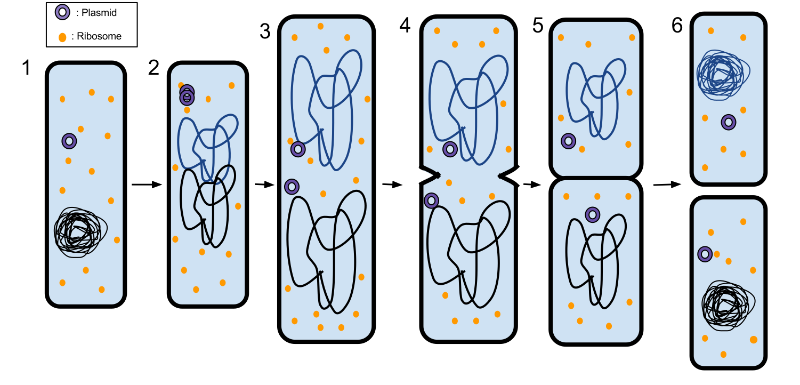
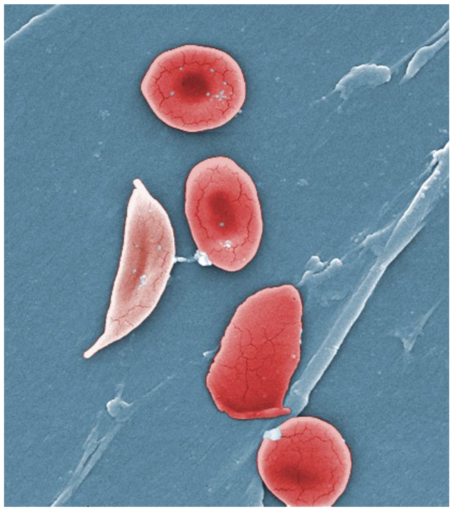
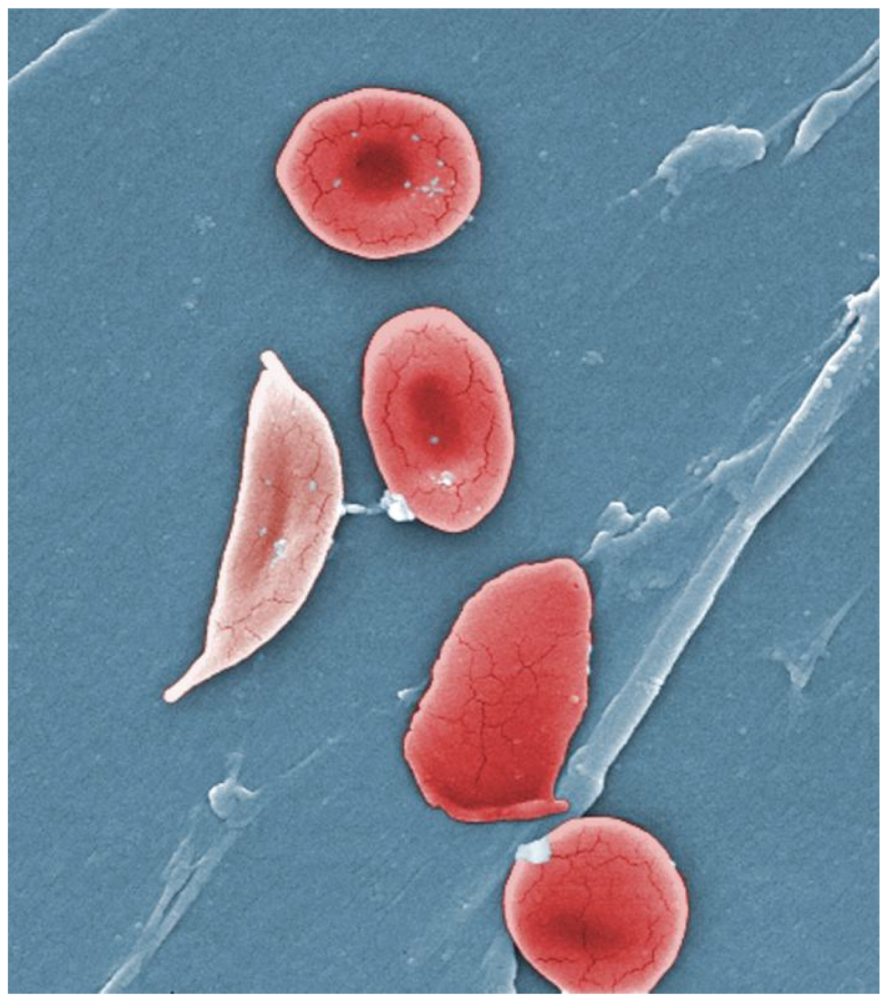
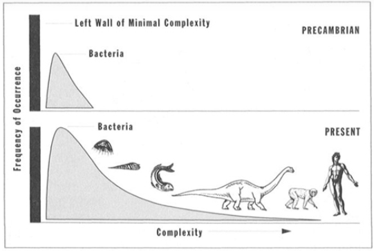

Chapter 4 Evolution and phylogenesis

4.1 Evolution
4.1.1 Variability and selection
Bacteria & Archae

(Source: Ecoddington, wikipedia)
Eukaryota
 (Source: Ali Zifan, wikipedia)
(Source: Ali Zifan, wikipedia)

(Source: wikipedia)
Error margin of DNA replication: 1 error per billion basepairs that are copied (Human genome 6.4 billion basepairs)
Insertions/deletions: basepairs that are added or removed
Recombination: reshuffling of genetic traits, e.g. during sexual reproduction (e.g. recombination of paternal and maternal segments during meiosis). \(\rightarrow\) Mutations \(\rightarrow\) Natural variability
Most mutaties are neutral \(\rightarrow\) Moleculair/Genetic clock
But not always
 


(Source: Thomas Samuel (1), OpenStax College (2), BruceBlaus(3), wikipedia)
- Many in Africa
- Why does this mutation remains?
- Selection by ecofactors: malaria resistence
4.1.2 Evolution
Natural process that forms the basis of the origin of species (plants, animals, bacteria, fungi, … and homonids)
Driven by two opposing forces: variation en selection
Variation by spontaneous copy errors in genetic code: mutations
Selection upon ecofactors, is mutation beneficial or harmfull for a particular organism in its specific environment.
Odds on fixation of mutation depends on reproductive success
Process of mutation and selection can eventually lead to new species upon many generations.
4.1.3 Genetic drift
Genetic drift: randpm fluctuations of allelles
Particularly strong in small populations
As opposed to selection it is not adaptive.
New species will originate more quickly when a small fraction of the population gets isolated in a new environment.
4.1.4 Horizontal gene transfer
Non sexual transfer of genetic information
Very common between prokaryotes (eubacteria and arachae bacteria)
- e.g. exchange of antibiotics resistance.
between eukaryotes (mainly in protists, unicellular organisms with nucleus)
between prokaryotes (eubacteria and arachae bacteria) and eukaryotes (protisten, fungae, plants and animals)
4.1.5 Teleonomy
There is only the primitive goal to maintain and reproduce the species.
Evolution has no purpose or direction
When complex organs and organisms originate its seems as if there is a direction/purpose but that is not the case.

(Source: Matticus78, wikipedia)
The eye is not developed by evolution with the purpose to see.
The eye only has the function to see
It is the result of a gradual process where each adaptation gave a reproductive advantage in a particular environment.
In another environment it can be nolonger functional and than it might dissapear, e.g. moles eye
The origin of a species is the result of evolution but not the purpose of evolution.
evolution is adaptation with as goal maintance and reproduction
4.1.5.1 Evolution has no direction
- Distribution of number of species and complexity

(Source: Stephen J. Gould, 1996, Full House: the spread of Excellence from Plato To Darwin)
- Distribution of carbon mass fixated in different types of species.

(Massa in giga ton koolstof. Source: doi.org/10.1073/pnas.1711842115)
Note, large error margin on bacteria (can be a factor 10 larger).
Number of bacterial cells in our body (Source: doi.org/10.1371/journal.pbio.1002533):
- #bacterial cells/#human cells earlier estimated as \(\pm\) 10/1
- recent estimatiom \(\pm\) 1/1.
- Human of 70kg \(\pm\) 38 trillion bacterial cells/30 trillion humane cells (trillion: 1000 billion: 10\(^12\)!).
4.2 Phylogenese
Origin of all species by evolution

(Source: wikipedia)
- Rolando refers to origin of species and adaptation to the environment as evolutionary differentiation.
4.2.1 Timescale

| 4.5 BYA | 4.3 BYA | 3.8 BYA | 3.5 BYA | 540 MYA | 520 MYA |
|---|---|---|---|---|---|
(Source: naturedocumetaries.org)
Black Earth (4.5 BYA): hot basalt rock and dust in a cold vacuum
Grey Earth (4.3 BYA): granite
Blue Earth (3.8 BYA): water
Red Earth (3.5 BYA): Radical change due to life.
- Cyanobacteria \(\rightarrow\) fotosynthesis \(\rightarrow\) oxygen
- All iron in the ocean precipitates as iron oxide (rust, red)
- 250 \(\rightarrow\) > 5000 minerals.
- Mass extinction
White Earth (540 MYA)
- Large ice age
- Mass extinction
- Volcanic activity comes to the rescue: greenhouse gasses
Green Earth (520 MYA)
- Explosion of life
- fron unicellular to more complex life.
4.2.2 Changepoint: Genesis of eukaryotic cell
Tww archetypes: prokaryoten (simple cells, 0.1 to 5.0 \(\mu m\)) and eukaryotes (larger and more complex cells, 10-100 \(\mu m\))


(Source: Ali Zifan (1) & Mariana Ruiz Villarreal (2 & 3), wikipedia)
- 3.5 BYA - 520 MYA only prokaryote cells in fossils
Genesis of Eukaryotic cell by endosymbiosis:

(Source: Kelvinsong, wikipedia)
- Prokaryotes: reproduction by cell devision, mutation fixed in all daugther cells.
Eukaryotes: nearly all have a phase of sexual reproduction
- much more variation: recombination of chromosomes
- diploid organisms have two copies of each gene (father and mother) \(\rightarrow\) successive mutations in 1 copy possible in the presence of another functional copy of the gene.
Eukaryotes evolve further in
- protists (unicellular)
- fungae
- plants
- animals
Genetic information of a species can be seen as a record of the environments and development that it underwent up to this point
4.3 Evolution of evolution
Chemical evolution: selection of building blocks and complex chemistry
Biological evolution: cell/organism \(\rightarrow\) selection genetic information and function
Cultural evolution can bypass natural evolution:
- artificial selection: breeding of plants, pets, cattle, genetic manipulation, etc.
- Technology: fast adaptation to new environment